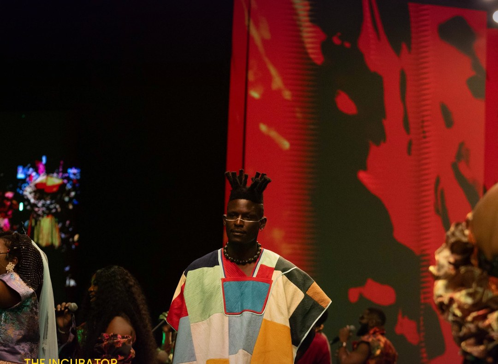

Lagos Fashion Week 2026
Everything to know before the runway lights up. Five days, one big idea, and the platform that has launched some of Africa's most exciting designers. The CRAFTED season runs from 28 October to 1 November.

Every year, for one week, the fashion world's attention turns to Victoria Island. Buyers, editors, stylists and the best-dressed people in West Africa descend on Lagos to see what the continent's designers will do next. In 2026, Lagos Fashion Week comes with a theme that sums up where African fashion is right now: CRAFTED.
This year's themeHeritage. Innovation. Circular futures.
The full title of the season is CRAFTED: Heritage. Innovation. Circular Futures. The idea is simple to say and hard to do well: take the techniques Africa's artisans have used for generations, the weaving, dyeing, beading and hand-finishing, and bring them into contemporary design. Alongside that comes a push for circularity, making clothes that last, can be repaired and keep their value, instead of being worn twice and thrown away.
It isn't a new direction for Lagos Fashion Week so much as a sharpening of one. Sustainability has been at the centre of the platform for years, through programmes like Green Access, a competition and runway show that gets Nigerian students thinking about sustainable design, and Woven Threads, launched in 2020 to push the African industry towards a circular fashion economy, from traditional textiles to waste management and technology.
The season's campaign was shot by Nigerian photographer Daniel Obasi, as a modern take on the classic African studio portrait.
The weekHow the five days play out
Wednesday 28 October opens the season with a welcome party. From Thursday 29 to Saturday 31 October, the runway shows take over the LagosFW Tents at the Federal Palace Hotel on Victoria Island. On Sunday 1 November, the week moves out into the city, with offsite shows and special presentations across Lagos.
Heineken returns as title sponsor, a role it has held since 2015, with NIVEA, the Africa Finance Corporation and Lush Hair as key partners. The show is organised by Style House Files, the creative agency behind Lagos Fashion Week since the start. The full designer line-up is being revealed by the organisers in the run-up to the week, and we'll be covering the standout collections as they show.

Since 2011Fifteen years in the making
Lagos Fashion Week was founded in 2011 by Omoyemi Akerele, who also runs Style House Files. From the beginning, the goal was bigger than a runway. Akerele has spoken about focusing on what happens after the lights go out: helping designers with production, retail and the business side, so that a great show turns into a lasting brand.
Today it is one of the most important fashion platforms on the continent, bringing Nigerian and African designers together with buyers, media and fashion lovers every season. Maki Oh is among the labels it has helped bring to a wider audience.
The incubatorWhere the next big names start
Arguably the most important thing Lagos Fashion Week does happens away from the main runway. Its Fashion Focus programme, which began life in 2011 as a young designer competition, is a year-long incubator for emerging Nigerian designers, offering mentoring, exposure and access to international showcases.
Its alumni read like a list of modern Nigerian fashion's biggest success stories. Orange Culture, the label of designer Adebayo Oke-Lawal, was there in the very first season in 2011. IAMISIGO came through the programme too. And Kenneth Ize, who launched his label at Lagos Fashion Week and builds his collections around traditional Nigerian weaving, went on to become a finalist for the LVMH Prize in 2019, one of the most prestigious awards for young designers in the world.
28 Oct – 1 NovFive days of African design
If the theme holds, expect hand-woven fabrics treated like luxury, old techniques used in new ways, and collections designed to be worn for years. We'll be bringing you the standout looks all week. Which designer are you watching?
Sources
- Marie Claire Nigeria: Lagos Fashion Week's 2026 theme, CRAFTED
- FAB L'Style: Lagos Fashion Week 2026 dates and theme
- The Rio Times: Lagos Fashion Week 2026 (Oct 2026)
- Wikipedia: Lagos Fashion Week
- BellaNaija: Lagos Fashion Week, 10 memorable years
- MODELS.com: Lagos report, Omoyemi Akerele
- Lagos Fashion Week: Woven Threads
- Lagos Fashion Week: Kenneth Ize
- FashionNetwork: LVMH Prize announces 8 finalists (Mar 2019)